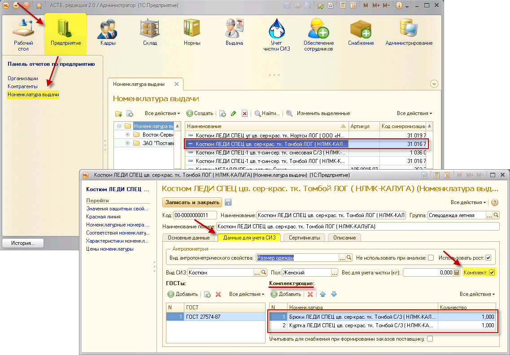
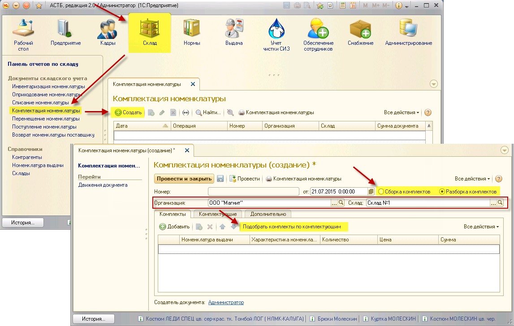
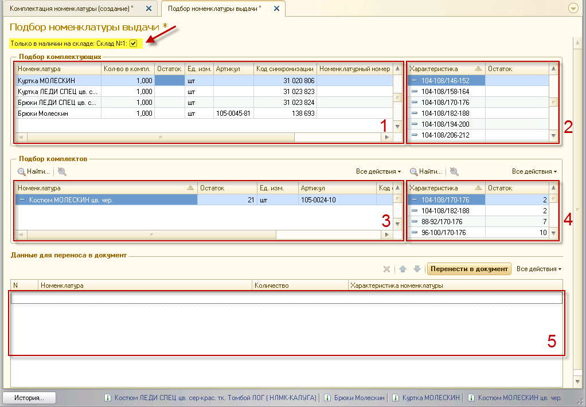
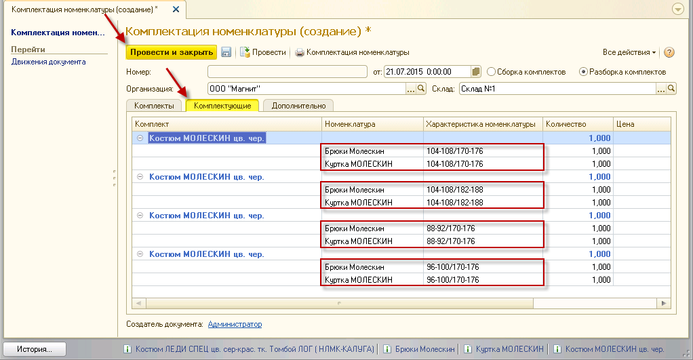
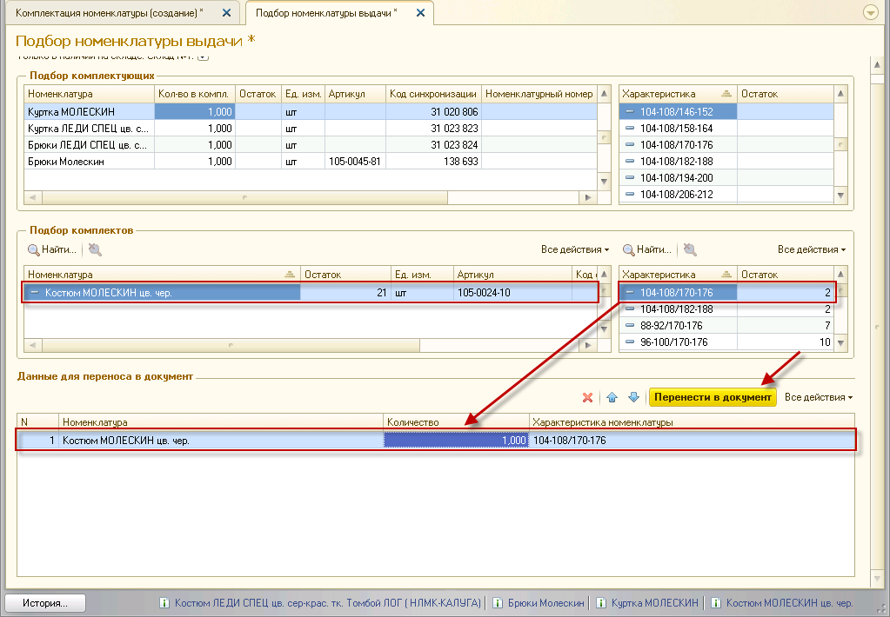
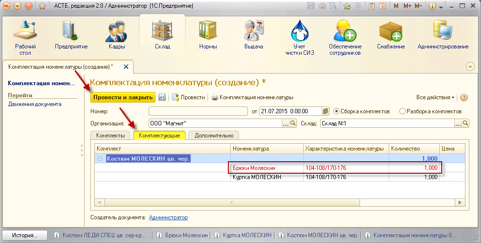

В программе реализована возможность сборки и разборки комплектов, находящихся в остатках на складе. Возможность создавать комплекты будет доступна, если в номенклатуре выдачи будут позиции, у которых в свойствах есть указание комплектующих.
Чтобы узнать, существует ли подобная возможность для определенного комплекта, следует зайти в раздел «Организации», справочник «Номенклатура выдачи», а затем выбрать нужную позицию справочника. После этого в новом окне откроется карточка выбранной номенклатуры с подробным описанием ее свойств и характеристик. В данном окне выберите вкладку «Данные для учета СИЗ». Если костюм может быть разбит на комплектующие, это отобразиться в таблице под подзаголовком «Комплектующие».

Подобные комплекты можно собрать, если на складе есть нужные комплектующие, и разобрать, если числятся комплекты.
Для разборки комплекта необходимо зайти в раздел «Склад», документ «Комплектация номенклатуры», а затем нажать кнопку «Создать». В открывшемся окне заполните организацию и склад. Здесь же необходимо выбрать тип создаваемого документа: сборка или разборка. Выберите «Разборка комплектов». Далее нажмите кнопку «Подобрать комплекты по комплектующим».

Откроется окно «Подбор номенклатуры выдачи», разделенное на пять таблиц:
· Таблица №1 показывает все возможные комплектующие и их наличие на складе.
· Таблица №2 отображает характеристики выбранного в Таблице №1 элемента комплекта.
· Таблица №3 показывает возможные комплекты и их наличие на складе.
· Таблица №4 отображает характеристики комплекта, выбранного в Таблице №3.
· Таблица №5 содержит данные для переноса в документ.

Проставьте флажок «Только в наличие на складе». Затем в Таблице №3 выберите комплект для разборки, а в Таблице №4 его характеристику и, удерживая левую клавишу, перетащите данную позицию в окно данных для переноса в документ. Когда список сформирован, нажмите кнопку «Перенести в документ».
Примечание: если в окно переноса данных перетащить комплект из Таблицы №3, в нем отобразятся все размеры данной номенклатуры, включая непредставленные на складе.

В окне «Комплектация номенклатуры (создание)», во вкладке «Комплектующие», отобразятся позиции, которые будут оприходованы на склад. На примере ниже видно, что будет разобрано 4 костюма на 4 пары брюк и 4 куртки. При проведении документа эти товары появятся в наличии на складе. Нажмите кнопку «Провести и закрыть».

Сборка комплекта происходит по аналогии с разборкой. Зайдите в раздел «Склад», документ «Комплектация номенклатуры», а затем нажмите кнопку «Создать». В открывшемся окне заполните организацию и склад. Выберите тип «Сборка комплектов». Далее нажмите кнопку «Подобрать комплекты по комплектующим».
Проставьте флажок «Только в наличие на складе». Затем в Таблице №3 выберите комплект для сборки, а в Таблице №4 его характеристику и, удерживая левую клавишу, перетащите данную позицию в окно данных для переноса в документ. Когда список сформирован, нажмите кнопку «Перенести в документ».
Примечание: если в окно переноса данных перетащить комплект из Таблицы №3, в нем отобразятся все размеры данной номенклатуры, включая непредставленные на складе.

В результате проведения документа на складе в остатках окажется уже собранный комплект. При этом комплектующие комплекта будут списаны со склада в количестве, участвующем в комплектации.
Если во вкладке «Комплектующие», какая-либо позиция выделена красным цветом, это означает, что для сборки не хватает комплектующих. Такой комплект собрать не получится.
Примечание: собрать комплект из комплектующих разного размера нельзя.

После того, как список был сформирован, нажмите кнопку «Провести и закрыть».